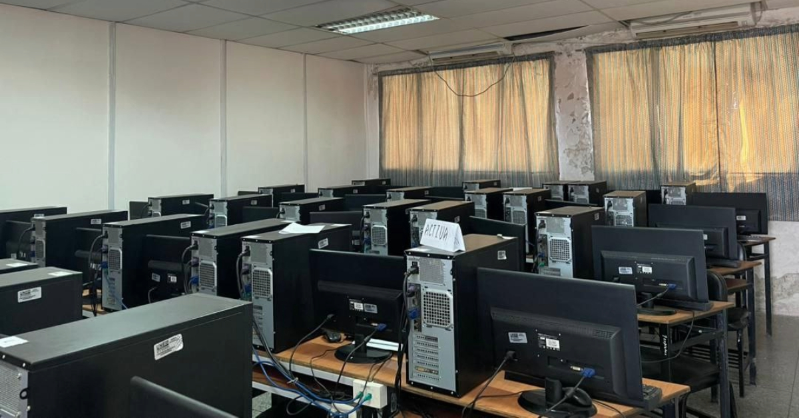

UNES - Administración del Laboratorio de Tecnología
Gestiona y automatiza los reportes de recursos tecnológicos.
Laboratorio de Tecnología
El laboratorio de tecnología de la UNES cuenta con aproximadamente 35 computadoras y otros recursos como reguladores, teclados, ratones y monitores, estos recursos son esenciales para el desarrollo de las actividades académicas y son gestionados de forma centralizada desde la oficina de tecnología.
Administración de Recursos
El seguimiento y administración de todos los recursos del laboratorio se realiza desde la oficina de tecnología, donde trabaja un administrador encargado, este administrador lleva el control de los equipos y recursos para asegurar su correcto funcionamiento y mantenimiento.
Software de Automatización
Para facilitar la gestión de recursos, hemos desarrollado un software que permite al administrador automatizar la creación de reportes, esto mejora la eficiencia del proceso, permitiendo un control más rápido y preciso de los recursos del laboratorio.
Descargar Software
Haz clic en el botón para descargar el software de automatización y mejora la gestión de recursos en el laboratorio ahora!
Descargar AhoraMisión
La Universidad Nacional Experimental de la Seguridad es una institución académica especializada que se adscribe al paradigma científico, tecnológico-humanista, abierta a las necesidades locales, regionales, nacionales y latinoamericanas, cuya misión es formar para transformar garantizando el derecho a la seguridad. Ofrece a las y los aspirantes, las funcionarias y los funcionarios de los cuerpos de seguridad del país, una formación integral de base, continua, diversificada, transdisciplinaria, actualizada y pertinente, acorde con las áreas especializadas de los servicios, en estrecha y permanente vinculación social; afianzada en la creación intelectual y la ética profesional sustentada en profundos sentimientos patrióticos y el respeto a los derechos humanos para servir de manera incorruptible a nuestro pueblo y contribuir decisivamente a la transformación de la sociedad venezolana hacia la democracia socialista del siglo XXI.
Visión
La Universidad Nacional Experimental de la Seguridad será una institución de excelencia académica y marcado compromiso social, sustentada en los valores de confiabilidad, transparencia, eficacia y participación, orientados por su sentido ético hacia el respeto de los derechos humanos, libertades ciudadanas y la resolución de los problemas de seguridad del pueblo venezolano. Servirá como centro de referencia científica y pedagógica nacional, regional e internacional con amplio reconocimiento por la calidad e impacto de su gestión en la formación integral de las y los aspirantes, las funcionarias y los funcionarios, la creación intelectual y la vinculación social, fundamentada en la educación dialógica, problematizadora, reflexiva, dignificante, con visión crítica, enfoque de género, sentido latinoamericanista y universal.
Acerca de Nosotros
La Universidad Nacional Experimental de la Seguridad UNES es la institución universitaria especializada que se encarga de la profesionalización y el desarrollo integral de funcionarias y funcionarios de la seguridad ciudadana en el pais. Con un curriculum común básico y con diversificación según las disciplinas y áreas especializadas del servicio, la UNES asume el relo de consolidar cuerpos de seguridad ciudadana al servicio del pueblo venezolano que sean transparentes, con sentido ético, confiables, eficaces, abiertos a la participación popular, a la contraloría social y ajustados al cumplimiento de los derechos y libertades ciudadanas. La UNES formará permanentemente a las funcionarias y funcionarios de los siguientes órganos de seguridad: La Policía Nacional Bolivariana. Cuerpos de Policía Estadales y Municipales. Cuerpo de Investigaciones Científicas, Penales y Criminalísticas. Cuerpos de Bomberos y Bomberas. Cuerpo de Protección Civil y Administración de Desastres. Penitenciaristas. Cuerpo Técnico de Vigilancia y Tránsito Terrestre. Los procesos de aprendizaje de la UNES están fundamentados en la creación intelectual, la sistematización de las prácticas y problemas de seguridad (en los contextos nacional, regional y local), en el intercambio de saberes y en la participación activa de educadores y estudiantes. Es por ello que nuestra institución asume la educación y el conocimiento como bienes públicos al servicio de todas y todos, bajo los principios de justicia social, respeto a los derechos humanos, igualdad de género, diversidad e interculturalidad. cooperación solidaria, participación ciudadana, calidad, pertinencia, formación integral, educación a lo largo de toda la vida, vinculación con los planes de desarrollo nacional y cooperación internacional.
Historia de la UNES
Por voluntad del presidente Hugo Rafael Chávez Frías, Nace la Universidad Nacional Experimental de la Seguridad (UNES) EL 13 de Febrero del año 2009 y entra en pleno funcionamiento el 19 de abril de 2010. Es el resultado de un proceso que comprende varias etapas. El año 2006 destaca dentro de este proceso, pues durante sus primeros meses se llevó a cabo la creación de la Comisión Nacional para la Reforma Policial (Conarepol). En el marco de esta comisión se realizó un diagnóstico sobre la situación de los cuerpos policiales del país, se consultó a la población sobre la visión que tenía el Servicio de Policía y se formularon recomendaciones para el diseño de una política pública en materia de seguridad. En el año 2008 se aprueba la Ley Orgánica del Servicio de Policía y del Cuerpo de Policía Nacional Bolivariana, con base en los aportes de la Conarepol. En 2009 se crea el Consejo General de Policía y comienza el trabajo con la Asamblea Nacional, hasta aprobarse la Ley del Estatuto de la Función Policía. En diciembre de este mismo año nacer el Cuerpo de Policía Nacional Bolivariana, conformado por funcionarios de la extinta Policía Metropolitana egresados de la UNES, tras el primer proceso formativo puesto en marcha por esta Alma Mater. La historia de la UNES aún se está escribiendo…
Nuestros Programas
Conoce los Programas Nacionales de Formación (PNF) que ofrecemos:
PNF en Servicio de Policía
El Programa Nacional de Formación Policial se propone formar profesionales ciudadanos responsables, integrales, con principios y valores éticos y humanísticos, con dominio de los procedimientos policiales orientados a la prevención de las inconvivencias, los delitos y la accidentalidad vial, en el marco Plan de Desarrollo Económico y Social de la Nación y en correspondencia con los principios fundamentales expresados en la Constitución de la República Bolivariana de Venezuela.
PNF en Ciencias de Fuego y Seguridad contra incendios
El Programa Nacional de Formación en Ciencias del Fuego y Seguridad Contra Incendios se propone formar profesionales integrales, con principios y valores éticos, humanísticos, ecológicos y sensibilidad social, con dominio en lo científico y tecnológico para la coordinación, planeación, programación, ejecución, dirección, control y supervisión de los recursos materiales, financieros y del talento humano al servicio de la prevención y gestión de emergencias, brindando protección y seguridad a la comunidad, en el marco de la Constitución de la República Bolivariana de Venezuela.
PNF en Investigación Penal
El PNF en Investigación Penal tiene como misión la formación integral y profesional de las y los funcionarios en el área de investigación penal, quienes estarán al servicio del pueblo venezolano, a través del adecuado manejo de procedimientos técnico-científicos para el esclarecimiento de hechos delictivos, en el marco del respeto a los derechos humanos y resaltando el sentido de identidad institucional.
PNF en Servicio Penitenciario
El Programa Nacional de Formación en Servicios Penitenciarios se propone formar profesionales integrales, críticos, reflexivos, humanistas, transformadores, con principios y valores éticos y socialistas consustanciados con un servicio transformador, sensibilizados hacia la búsqueda constante de la justicia social y de la inclusión, con sólidos conocimientos para diseñar, planificar, dirigir, ejecutar, controlar y evaluar procesos y procedimientos relacionados con la gestión penitenciaria, seguridad y custodia y atención integral de las y los privados de libertad, en concordancia con la Constitución de la República Bolivariana de Venezuela y la Ley del Plan de la Patria.
PNF en Protección Civil y Administración de Desastres
El Programa Nacional de Formación en Protección Civil y Administración de Desastres, se propone formar, con un talento humano técnico-especializado y crítico, a los profesionales del área de Protección Civil y Administración de Desastres que respondan a las necesidades de las distintas regiones del país en materia de riesgo y desastres y preparen a las comunidades para enfrentar situaciones que constituyan amenaza, vulnerabilidad o riesgo en función de las características demográficas, geográficas, culturales, económicas de la región a la cual pertenezcan; sean profesionales que ejecuten acciones y medidas para la reducción del riesgo de desastres y contribuyan de esta manera, al fortalecimiento de una cultura preventiva, que contribuya con el desarrollo sustentable del país y consolide su soberanía; asimismo, que brinden una respuesta eficaz y eficiente en los momentos del desastre y colaboren en la rehabilitación y reconstrucción de las comunidades afectadas, como parte de la defensa, conservación y desarrollo de la vida humana y su medio ambiente.
PNF en Criminalística
El Programa Nacional de Formación en Criminalística, se propone formar profesionales integrales en el área de Criminalística, con principios y valores éticos, humanísticos y ecológicos para el adecuado manejo de procedimientos técnico-científicos en el esclarecimiento de hechos delictivos, en el marco del respeto de los Derechos Humanos, la Constitución de la República Bolivariana de Venezuela y demás leyes, resaltando el sentido de identidad institucional, así como el desarrollo de los procesos de investigación y vinculación social en el área, de acuerdo al contexto político territorial.
PNF en Seguridad de la Nación
El Programa Nacional de Formación en Seguridad de la Nación tiene como misión la formación integral y profesional de las y los funcionarios del Servicio Bolivariano de Inteligencia Nacional, en las redes del conocimiento y aprendizaje para la generación, transformación y apropiación social en las áreas de Inteligencia y Contrainteligencia, al servicio de la Nación.
PNF en Emergencia Prehospitalarias
El Programa Nacional de Formación en Emergencia Prehospitalarias propone formar profesionales integrales, con principios y valores éticos, humanísticos, ecológicos y sensibilidad social, con dominio en lo científico y tecnológico para brindar soporte básico y avanzado de vida a enfermos y lesionados en el ámbito prehospitalario hasta su traslado al centro de salud así como la coordinación, planeación, programación, ejecución, dirección, control y supervisión de eventos adversos generadores de víctimas y la gestión de los servicios de atención de emergencias a la comunidad, en el marco de la constitución de la República Bolivariana de Venezuela.